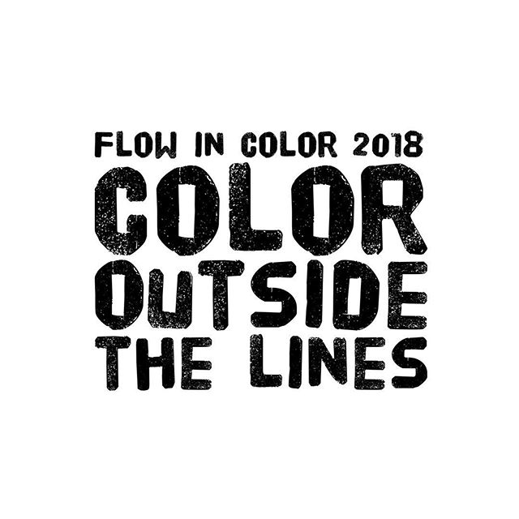
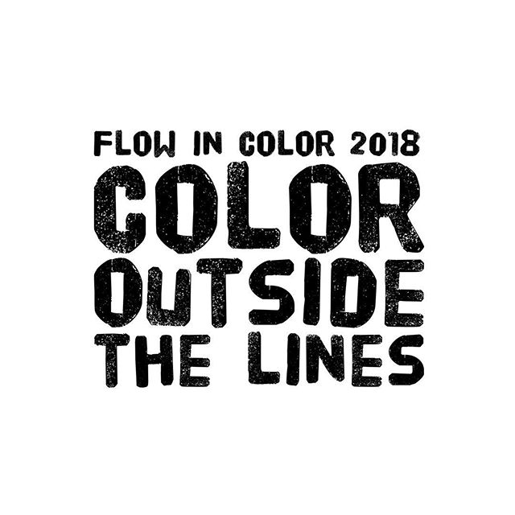
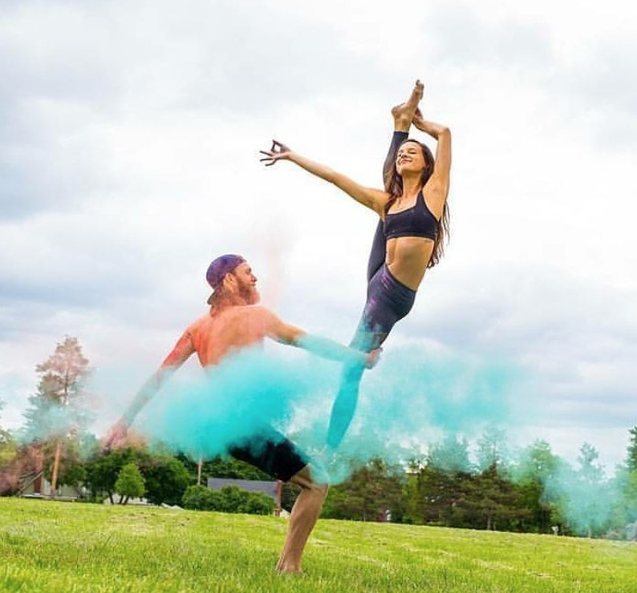
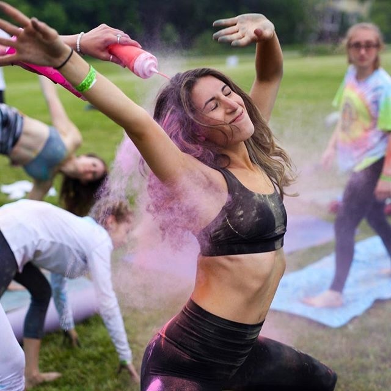
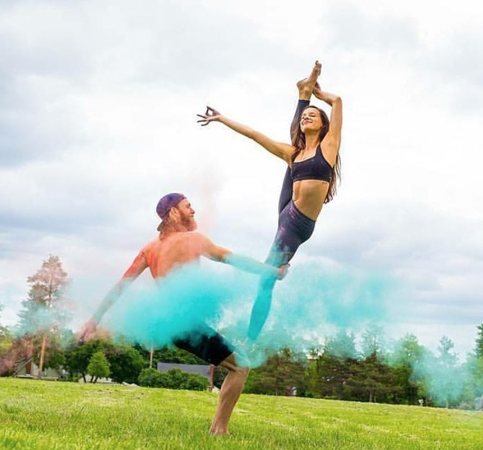
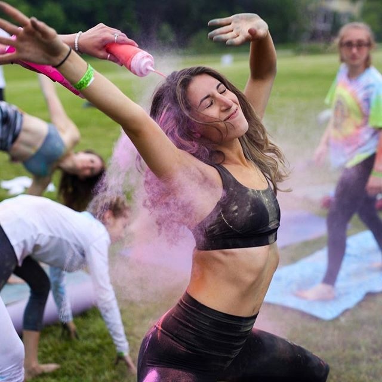

About Flow In Color
Flow in Color is a half day Yoga Festival inspired by Holi, the Indian Festival of Color. Traditionally, Holi is celebrated to welcome in the warm weather and to honor the triumph of good over evil by throwing color powder or colored water up in the air. We've tied these lively traditions together with yoga, philanthropy, food, and music to create an all-around transformational experience and celebration of mindfulness.
Last year, our theme for Flow in Color was: "Life in Color." This year, we wanted to do more than just bringing color into our own lives. We are so happy to announce that we will be working with the Downtown Boxing Gym Youth Program in Detroit, Michigan to help incorporate our new theme: "Color Outside the Lines." Our idea for "Color Outside the Lines," comes from the playful nature of children, how colorful and vibrant their lives are. Sadly, as we grow older, we lose some of this vibrancy and our lives begin to become dull and restricted. It is our belief that Yoga and mindfulness can help maintain and keep these bright, youthful hearts alive. We wanted to make the festival BIGGER this year, and extend beyond the lines, by inviting everyone to join in on the fun!
We're partnering with Born Yoga Studio in Birmingham, Michigan to bring a FULL Kid's Yoga Program to be run simultaneously with Flow in Color. With this new Kid's Yoga Program being established, we wanted to share the gift of yoga to those maybe unable to experience it. We've created a GoFundMe that will provide as many of the students at the Downtown Boxing Gym Youth Program with entrance and access to our Kid's Yoga Program as possible. If you can't make it to Flow in Color, you can still donate to the GoFundMe below to support this truly special cause! Not only are we attempting to introduce as many kid's near and far to the powerful benefits of Yoga, but we will also be donating 10% of the profits from Flow in Color to the Downtown Boxing Gym.
Just like last year, we're offering three sessions of Workshops where you'll have the selection of three to four workshops per session to choose from. The Color Class is the culmination of our festival and will leave you not only feeling colorful and glowing on the outside but will send you home feeling so vibrant and bright on the inside!
Our NEW Kid's Yoga Program will be run by certified Kid's Yoga Teachers and will offer your child the opportunity to get familiar and comfortable with the world of Yoga while you enjoy some of the best workshops taught by some of your favorite teachers! Kid's Tickets are sold to students 12 and under!


 

 



connect with us on Facebook